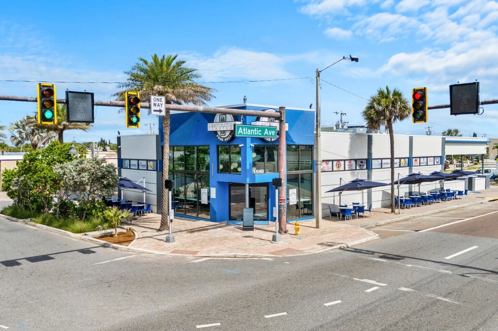

Noise is the most common comfort complaint in commercial spaces located near busy roads, airports, rail lines, or nightlife districts. Office tenants complain about traffic drone. Healthcare facilities struggle with exterior noise during patient exams. Hospitality operators field guest complaints about street noise in what were supposed to be premium rooms. Every one of these is a solvable glazing problem, and the solution is quantified in Sound Transmission Class (STC) ratings. The difference between standard commercial glass and properly specified acoustic glass is 10 to 15 decibels of interior noise reduction — roughly the perceptual equivalent of moving twice as far from the noise source. This article breaks down STC ratings by common glass build, what drives acoustic performance, and how to spec noise-reducing glass on Florida commercial projects.

STC and OITC: The Acoustic Ratings
Acoustic performance of commercial glass is measured by two standards.
- STC (Sound Transmission Class) per ASTM E413 is the older and more commonly quoted metric. It measures transmission loss across 16 frequencies weighted toward speech (125 Hz to 4000 Hz). Higher STC = better sound blocking.
- OITC (Outdoor-Indoor Transmission Class) per ASTM E1332 is newer and weights lower frequencies more heavily (80 Hz to 4000 Hz). OITC correlates better with traffic noise, aircraft noise, and HVAC drone — the kinds of sounds commercial buildings actually deal with. OITC is typically 5–10 points lower than STC for the same glass.
For a commercial specification, both matter. STC is what most code documents and tenant criteria reference. OITC is what actually predicts the real-world tenant experience when the noise source is traffic or aircraft rather than human speech.
STC Ratings by Glass Build
| Glass Build | Typical STC | Typical OITC |
|---|---|---|
| 1/4" monolithic single pane | 27 | 25 |
| 9/16" laminated single pane | 34–36 | 30–32 |
| 1" IGU symmetric (1/4" + 1/2" air + 1/4") | 32 | 28 |
| 1 1/16" IGU asymmetric (9/16" lam + 1/2" air + 1/4") | 40–42 | 34–36 |
| 1 5/16" IGU asymmetric lam/lam | 44–47 | 38–42 |
| Specialty acoustic IGU (3/4" lam + 1/2" air + 9/16" lam with acoustic PVB) | 48–52 | 42–46 |
The range in each row reflects variability in interlayer type, frame system, and installation quality. A perfectly installed assembly with acoustic-specific PVB interlayer can hit the top of the range. Standard PVB in a standard frame lands in the middle. A poorly sealed perimeter can drop measured STC 3–5 points below the theoretical value.
Four Factors That Drive Acoustic Performance
1. Mass
Heavier glass blocks more sound. Doubling glass thickness adds roughly 5–6 STC points to a monolithic assembly. That's why 9/16 inch laminated hits STC 34 while 1/4 inch monolithic only hits STC 27. Laminated is heavier than monolithic at the same overall thickness because of the interlayer, which also adds damping.
2. Asymmetry
Two glass lites of the same thickness in an IGU share coincident frequency dips, where both lites resonate and transmission loss drops. Asymmetric builds — one lite thicker than the other — defeat the dips because the two lites resonate at different frequencies. An asymmetric IGU can outperform a symmetric IGU of the same total weight by 3–8 STC points.
3. Laminated Interlayer Type
Standard 0.030 inch or 0.060 inch PVB (polyvinyl butyral) provides moderate damping. Acoustic-specific PVB (Saflex Acoustic, Trosifol Sound Control) is engineered for higher damping across the speech and traffic frequency ranges and can add 3–5 STC points over standard PVB on the same assembly. SGP (SentryGlas) interlayer outperforms PVB on structural and impact properties but is slightly less acoustic-effective than acoustic PVB — which is why specialty acoustic projects sometimes spec acoustic PVB as inboard interlayer with SGP on the outboard lite for impact.
4. IGU Air Gap
Air gap thickness affects acoustic performance up to a point. A 1/2 inch air gap outperforms a 3/8 inch gap; a 3/4 inch gap outperforms 1/2 inch slightly. Gas fill (argon, krypton) improves thermal performance but has negligible acoustic benefit. Beyond roughly 3/4 inch gap, acoustic gain plateaus and cost increases faster than benefit.
Good Use Cases for Acoustic Glass
Airport-Adjacent Commercial
Buildings within a few miles of Miami International, Tampa International, Fort Lauderdale-Hollywood, Orlando International, and regional airports experience takeoff and landing noise that peaks at 80–90 dBA outdoors. With standard commercial glazing (STC 32–34), interior levels stay in the 55–60 dBA range — above the comfort threshold for conversation and well above the threshold for speech privacy in offices. Upgrading to STC 42 laminated asymmetric IGU drops interior levels to 40–45 dBA, which is comfortable background.
Hospitality Near Nightlife
Hotel rooms facing Ocean Drive in Miami Beach, Atlantic Avenue in Delray, or similar nightlife corridors need acoustic glass to hit industry guest-comfort targets. Most major brand hospitality programs set minimum OITC targets for noise-rated locations — often OITC 36 or higher — which translates to asymmetric laminated IGU at minimum.
Healthcare in Urban Cores
Exam rooms, operating rooms, and patient rooms facing major arterial streets benefit from acoustic glazing for both patient comfort and HIPAA-adjacent privacy (quiet enough that conversation doesn't transmit outward either). HCA Cape Coral is a reference point for healthcare glazing spec sensitivity.
Offices Near Rail and Transit
Commuter rail noise peaks at lower frequencies than traffic, where OITC weighting is more important than STC. A spec driven by OITC rather than STC — asymmetric laminated IGU with acoustic PVB — outperforms a higher-STC symmetric build for transit noise specifically.
Restaurants in Mixed-Use
Restaurants located below residential or above residential need acoustic floor and wall treatment, but exterior glazing often matters too. Street-level restaurants in mixed-use developments benefit from OITC-weighted glass specs to manage pedestrian and traffic noise in the dining experience. Projects like Wave Food Hall in Cocoa Beach coordinate glazing acoustics with operator expectations.
ESWindows Systems with Acoustic Glass
The ESWindows ES-8000 storefront platform accepts acoustic IGU builds up to 1 5/16 inch, which lets the system hit STC 44–47 on standard configurations. The ES-SGD2020 sliding glass door and GW-7000 curtainwall platforms similarly accept acoustic glass. Because the aluminum frame itself has limited acoustic performance, the frame becomes the weakest link on high-STC assemblies — which is why a system rated at STC 47 in glass measurement might test at STC 44 as an installed assembly (frame and perimeter contribute a few points of loss). See ESWindows systems for platform-specific glazing capacity.
Frame and Perimeter: Don't Leave STC on the Table
A specified STC 42 glass assembly installed in a field-leaky frame can test at STC 34 as an installed system because perimeter air leaks transmit sound. Acoustic installs need:
- Frame system rated to match or exceed the glass STC (thermally broken frames with continuous thermal break perform better acoustically too)
- Perimeter sealant with continuous bead, properly tooled, no gaps
- Backer rod correctly sized to the gap width
- Acoustic foam at anchor points on very high-STC installs
- No penetrations through the glazing assembly for wiring or plumbing
On an STC 48 installation, the perimeter detail is as important as the glass spec itself. Underestimating that is a common failure mode on projects that spec premium acoustic glass but don't spec the installation details to match.
Cost Implications
Acoustic glass cost premium over standard commercial impact glass:
- Standard 9/16" laminated impact (STC 34): base
- 1 1/16" IGU asymmetric (STC 40–42): +$8–$14/SF glass
- 1 5/16" IGU asymmetric laminated/laminated (STC 44–47): +$18–$28/SF glass
- Specialty acoustic PVB upgrade: +$3–$6/SF glass
- Premium full-spec acoustic IGU with acoustic PVB (STC 48+): +$28–$45/SF glass
Installation cost also increases because heavier glass needs more hoist equipment and larger framing. The install-level cost premium can run 20–40% over standard commercial glazing when going from STC 34 to STC 45+. That's significant but often justified when the alternative is tenant turnover from noise complaints.
How to Approach Acoustic Spec on a Project
- Measure or estimate exterior noise level (dBA) during peak conditions. Traffic studies, airport noise contour maps, or handheld SPL meter readings all work.
- Set target interior level based on tenant use: 45 dBA for premium office, 40 dBA for hospitality bedrooms, 35 dBA for healthcare exam rooms.
- Calculate required transmission loss (roughly target STC = exterior dBA minus target interior dBA, with adjustments for frequency weighting).
- Spec glass, frame, and perimeter to hit the target installed STC, not just the glass-only STC.
- Require field test on 1–2 mockup openings if the project is specification-driven (ASTM E966 field test on installed assemblies).
Getting a Spec for Your Project
ACG's takeoff includes acoustic rating recommendations on projects where noise is called out in the program. Send plans through bid.html with project context (airport proximity, traffic density, tenant program) for a line-item proposal that includes glass builds by STC target. GCs in West Palm Beach, Tampa, and across Florida can have acoustic spec pricing inside 48 hours. New construction work flows through the new construction glazing workflow with full shop drawing coordination on framing to meet installed STC targets. ACG is CGC-licensed (CGC1531993), factory-authorized on ESWindows and other commercial manufacturers. Call (772) 486-7711.